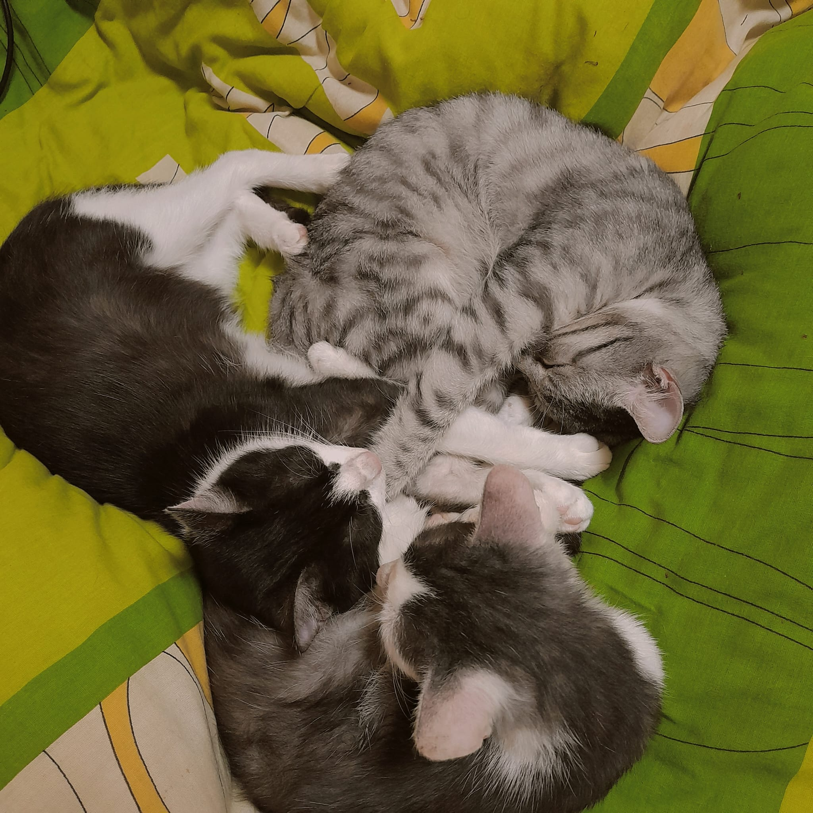

About myself!
My name is Loki, i'm almost 3 years old, my mommy and daddy are Vivi and Nick witch i love a lot and i know that they also love me ifinietly... even tho i destroy their curtains and eat mommy's plants. I also love my cat brothers Coco and Trixie, i like playing with them but they don.t like me as much cuz i'm a lot bigger then them :( *Down below i attched a pic of my brothers and me*
About my life
>''<
- My favourite place to sleep in the whole wide world is in my parents' bed.
- I like to steal food from the counter cuz it's yummyer.
- I sleep all day long but at night i'm the most energic cat ever
<3
If you want to know more about cats i'll put some url links for you to read